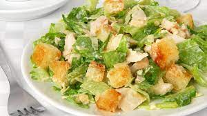
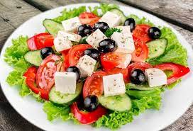

Ensalada Rusa
Ingredientes
- 3 papas medianas
- 1 zanahoria y media
- 1 taza de arvejas congeladas
- 1/2 taza de mayonesa
Elaboración paso a paso
- Pelar y cortar la papa en cubos de 1cm x 1cm aproximadamente. Pelar y cortar la zanahoria en
cubos de la mitad del tamaño que la papa (en este caso sería 0.5 x 0.5cm) Para que la
ensalada rusa quede genial, es importante que al cocinar todo junto, no quede la zanahoria
cruda, ni se pase la papa. Con estas medidas van a estar genial.
- Llevar las papas y las zanahorias cortadas a una olla amplia con mucha agua (así como sale
de la canilla). Agregar el laurel y la sal gruesa y llevar al fuego hasta que la papa esté
cocida. Para medir esto pueden pinchar una papita con un cuchillo, si la papa sin desarmarse
se cae del cuchillo, sacála nomás!
- Si usan arvejas congeladas, las agregan a la olla y dejar un minuto más o menos. Si usan
arvejas de lata las agregan cuando la papa y la zanahoria ya están escurridas.
- Retirar del fuego y escurrir. Dejar enfriar unos minutos y cuando todavía está caliente,
agregar la mayonesa. Revolver todo para que se integre, salpimentar y continuar integrando.
Ensalada Cesar

Ingredientes
- 2 Lechugas variedad Romana
- 1 Limón orgánico
- 2 anchoas
- Pan con mucha miga del día anterior
- 1/2 Ajo pelado y descorazonado
- 1 cdta de salsa Worchesterchire Puedes poner solo 1/2 cdta
- 1 cdta de Mostaza de Dijón
- 1 Yema de huevo ecológico
- 175 ml Aceite de oliva
- 50 gr Queso Parmesano y algo mas para las virutas del final
- Sal y pimienta a gusto
Elaboración paso a paso
- Antes que nada lavamos y cortamos la lechuga de la variedad Romana pues es la más crujiente
y la que mejor aguanta la salsa sin ablandarse. Reservamos con un papel de cocina humedecido
por encima para que mantenga todo su frescor
- Comenzamos rebajando las cortezas y cortando a daditos el pan del día anterior, o si se
prefiere se desmiga a pellizcos con la mano para que sean los trocitos irregulares. Ponemos
el pan troceado en una bandeja de horno y rociamos con un poco de aceite de oliva y sal y
horneamos a 180º durante 10-15 minutos. Hasta que veamos que obtienen el color deseado.
También puedes freírlos si lo prefieres, pero al horno son mas saludables!
- En un mortero majamos el ajo con las anchoas, hasta conseguir una especie de pasta. Añadimos
la yema, la mostaza, la salsa Worchestershire, el zumo del medio limón, y la pizca de
pimienta. Mezclamos todo bien.
- A continuación vamos añadiendo el aceite en hilo mientras seguimos removiendo con el
mortero, como si de una mayonesa se tratara, para conseguir una emulsión en forma de salsa
cremosa. Esto nos tomará unos minutos.
- Terminamos añadiendo el queso Parmesano rallado para corregirle la acidez y aportarle
textura y sabor.
- Montamos en una ensaladera o cuenco la lechuga, añadimos por encima queso Parmesano rallado
y en virutas para decorar y aportar textura. A continuación los crutons de pan bien
tostaditos y por último aliñamos con nuestra salsa a gusto.
Ensalada Mixta
Ingredientes
- 18 hojas de lechuga
- 8 hojas de lechuga de hoja de roble
- 2 patatas
- 1 tomate
- 4 espárragos blancos
- 24 aceitunas
- 4 huevos
- 100 gr de atún en conserva
- vinagre
- Sal
- aceite de oliva virgen extra
Elaboración paso a paso
- Pon abundante agua en una cazuela al fuego. Cuando empiece a hervir, introduce los huevos y
las patatas. Cuece los huevos durante 12 minutos y las patatas durante 25 minutos. Escurre y
deja enfriar.
- Pela las patatas, córtalas en rodajas y dristribúyelas en la base de una fuente
- Limpia bien las hojas de lechuga y de hoja de roble, escúrrelas, córtalas y colócalas encima
de las patatas.
- Pela los huevos y córtalos en cuartos. Pela el tomate y córtalo en medias lunas. Desmiga el
atún. Reparte los 3 ingredientes a tu gusto sobre las hojas de lechuga.
- Incorpora las aceitunas y los espárragos. Aliña la ensalada con aceite, vinagre y sal en el
momento de servir.
Ensalada Griega Con Queso Feta

Ingredientes
- 200 gr de queso feta.
- 4 tomates.
- 1 cebolla morada.
- 1 pimiento verde.
- 1 pepino.
- 4 cucharadas de olivas negras (mejor si son con hueso)
- 1 cucharada de postre de vinagre de vino o de manzana
- Orégano
- Aceite de oliva y sal.
Elaboración paso a paso
- Lava los tomates, el pimiento verde y el pepino con agua fría, escúrrelos y sécalos.
- Pela la cebolla morada, córtala por la mitad y cada mitad en juliana, es decir, en tiras
finas que quedan como medias lunas.
- Sumerge la cebolla en un bol con agua fría y una cucharada de postre de vinagre, para que
pierda un poco de fuerza el sabor.
- Corta el tomate en cuartos, eliminando la parte central.
- Quítale el rabo y las semillas al pimiento verde, y córtalo en rodajas
- Corta el pepino en rodajas, y cada una en 4 partes.
- Corta el queso feta en cubitos
- Ya tenemos todos los ingredientes listos, ahora solo falta emplatar. Coloca en un bol grande
al centro o en boles individuales el tomate, el pimiento verde, el pepino, la cebolla
escurrida, el queso feta y las olivas negras.
- Riega por encima con aceite de oliva y añade sal al gusto y orégano
- Sírvela recién hecha, aunque si prefieres prepararla con antelación, tan solo tienes que
prepararla sin echarle el aceite, la sal y el orégano que se los añadirás justo antes de
servir, y mantenla en la nevera mientras tanto.
Ensalada De Quinoa
Ingredientes
- 1taza de quinoa
- 2tazas de agua
- 1taza de tomates cherry, cortados por la mitad
- 1taza de pepino cortado en cuadritos
- 1/4taza de aceitunas kalamata cortadas en cuartos
- 1/4taza de queso feta
- 3cucharadas de aceite de oliva extra virgen
- 1 1/2cucharada vinagre roja
- 3/4cucharadita de orégano seco
- 1/4cucharadita de sal
- 1/4cucharadita de pimienta molida
Elaboración paso a paso
- En una cacerola mediana, combina la quinoa y el agua. Déjala hervir hasta que toda el agua
se absorba, de 15
a 20 minutos
- Transfiere la quinoa cocida a una bandeja para hornear y extiéndela uniformemente, ya que
ayudará a que se
enfríe más rápido. Una vez fría, coloca la quinoa en un tazón mediano y agrega los tomates,
pepino,
aceitunas y queso feta. Mezcla suavemente.
- Para el aderezo o aliño mezcla en un tazón pequeño aceite de oliva, vinagre roja, orégano,
sal y pimienta.
Sírvelo sobre la ensalada y mezcla todo uniformemente.